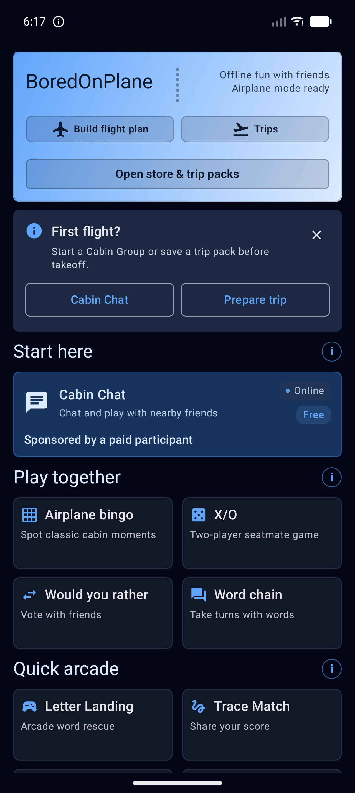
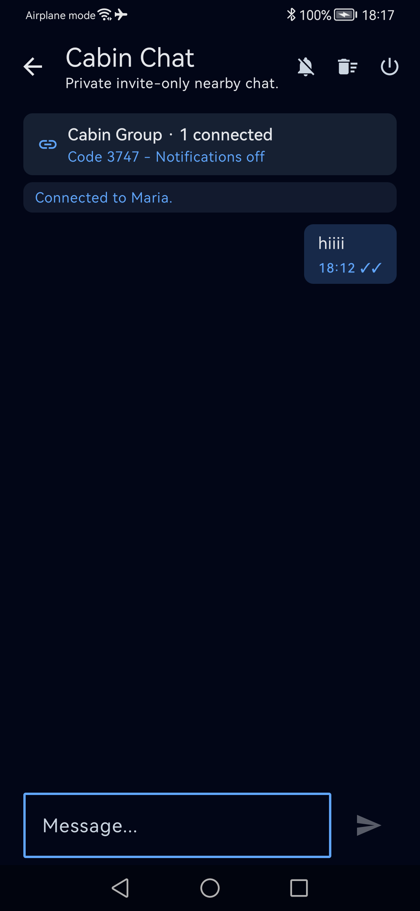
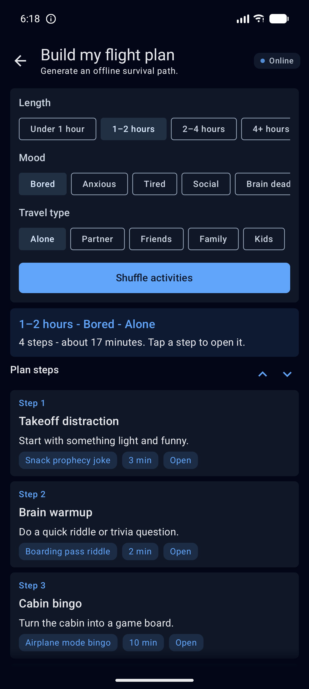
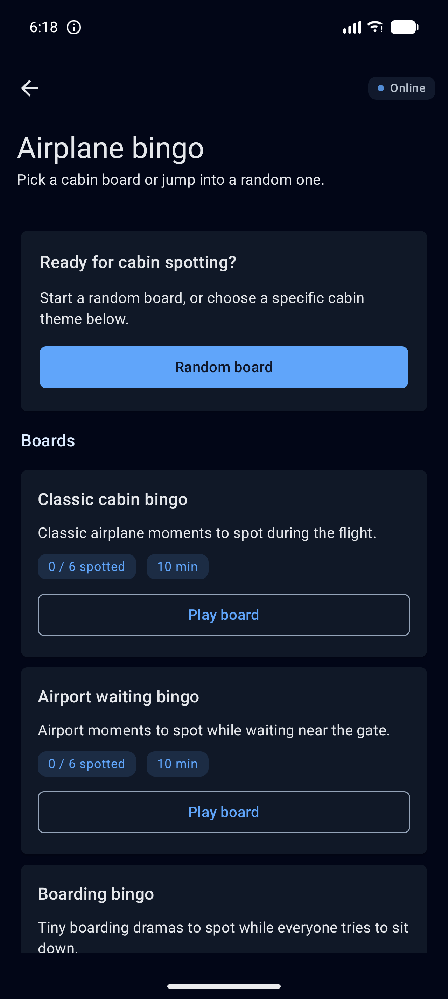
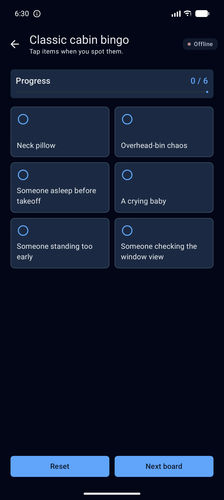
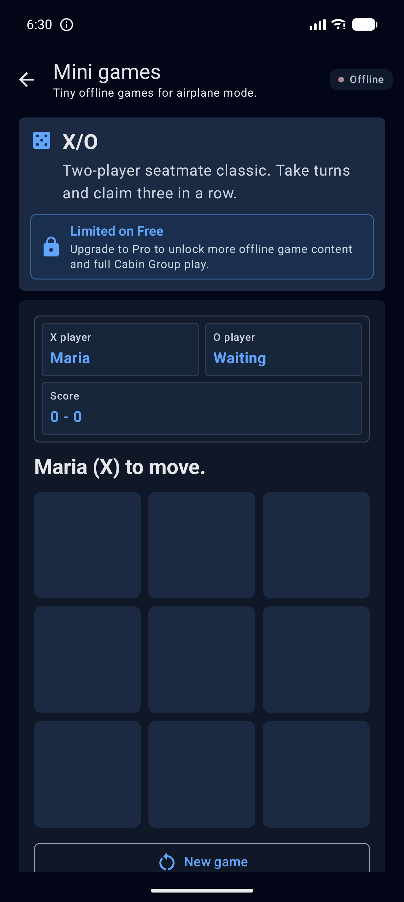

Built For Airplane Mode
Core activities are designed to work locally on your device. The app should still feel useful when the cabin door closes and the network disappears.
Offline-first flight companion
A pocket-sized cabin companion for long flights, quiet layovers, and airplane mode moments. Play local games, browse calm prompts, and prepare optional AI trip packs before takeoff.
Core activities are designed to work locally on your device. The app should still feel useful when the cabin door closes and the network disappears.
When enabled, BoredOnPlane can ask Tomovium Core to generate a personalized offline pack for a route, then save that pack locally for the flight.
Google Play purchases can unlock Pro access or add trip-pack credits. Purchase verification happens through Tomovium Core for safer entitlement handling.
Pricing
BoredOnPlane keeps the core experience offline-first. Free users can try Cabin Group for 30 connected minutes; Pro unlocks a richer app experience, while optional trip-pack credits generate personalized offline activities before takeoff.
One-time unlock
$6.99
Unlocks Pro access for extra BoredOnPlane features and a richer offline flight companion experience.
1 trip-pack credit
$0.99
Prepare one personalized AI trip pack, save it locally, and use it later in airplane mode.
2 trip-pack credits
$1.49
Best for outbound and return flights: two personalized trip packs at a lower price than buying separately.
How it works
BoredOnPlane is designed around the reality of travel: you may have internet before boarding, then nothing for hours. The app keeps built-in activities local, and generated trip packs are saved on-device so they are ready later.
Inside the app
Current Android captures show the shape of the app: a quiet home base, private Cabin Chat, simple offline planning, and small games that work when the network disappears.






Accounts are not required for the current experience. Most content stays on the device. Online calls are used for configuration, purchase verification, entitlement checks, and optional AI trip-pack generation.
For help, purchase issues, privacy questions, or app feedback, contact support@tomovium.com.